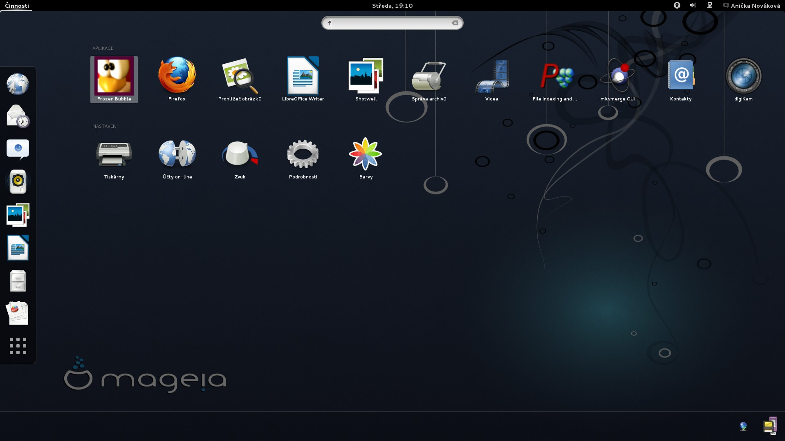
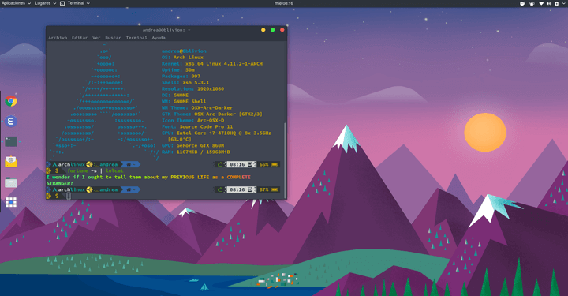

Розвитик LinuX
Коротка історія розвитку операційної системи LinuX
Говорячи "Linux", люди найчастіше мають на увазі групу операційних систем, розроблених на базі Linux. Хоча, по суті, Linux – це лише ядро операційної системи, і для розробки повноцінної операційної системи використовуються різні інструменти та бібліотеки інших ресурсів GNU. Крім того, все більше розробників використовують Linux для розробки та запуску мобільних програм. Крім того, Linux відіграє ключову роль у розробці таких пристроїв як Хромбуки (портативні пристрої під керуванням операційної системи Chrome, яка в якості ядра використовує гібрид ядра Linux і сервісів, розроблених компанією Google).
Linux став популярним з наступних причин:
- актуальність дистрибутивів та активна підтримка спільнотами розробників;
- можливість запускатися на різному устаткуванні;
- низькі вимоги щодо ресурсів;
- можливість встановити програми із існуючих репозиторіїв.
Але список причин, звичайно, лише цими не вичерпується; існують як практичні, а й етичні причини. Наприклад, багато розробників сприймають Linux як вираз відкритості, самовираження та доступності.
Історія розробки
Коріння Linux сягає двох інших проектів: Unix і Multics, які ставили за мету розробити розраховану на багато користувачів операційну систему.
Що таке Unix?

Unix - це збори кросплатформових розрахованих на багато користувачів і багатозадачних операційних систем.
Можна відразу сказати, що в даний момент Unix-системи є одними з найважливіших операційних систем. Вплив Unix поширився і мови програмування: мова C був розроблений під час розробки Unix-систем.
Розробкою Unix займалася корпорація Bell Laboratories – 1969 року вони показали першу систему Unix. Чим далі, тим більшої популярності набували системи Unix – у 70-х їх почали встановлювати на комп'ютери у навчальних закладах.
При створенні Unix розробники поставили перед собою три основні завдання:
- Використання мінімальної кількості функцій, збереження простоти.
- Спільність: однакові методи та механізми у різних випадках.
- Комбінування програм на вирішення завдань, а чи не розробка нових програм із нуля.
Що стосується відмінних рис Unix, то це:
- Практично постійне використання командного рядка.
- Використання конвейнерів.
- Налаштування системи за допомогою простих (часто текстових) файлів.
Unix має власну філософію. Програміст Дуглас Макілрой, який розробив конвейнер у Linux, визначив такі правила:
"Пишіть програми, які роблять щось одне та роблять це добре...."
"Пишіть програми, які працювали б разом".
"Пишіть програми, які підтримували б текстові потоки, оскільки це універсальний інтерфейс".
Дуглас Макілрой
Одна з проблем, що торкнулася Unix, – наявність різних версій та багатьох програм, які писали розробники під свої потреби. Через низьку сумісність програми, що працюють з однією версією Unix, могли не працювати на машинах з іншими версіями. У результаті було вирішено створити спільний документ із стандартами, яким повинні дотримуватися розробники.
У 1983 році було оголошено про створення GNU (GNU's Not UNIX), Unix-подібної операційної системи. Сталося це під впливом ідеї засновника проекту Річарда Столманна про необхідність створення операційної системи, що вільно розповсюджується, та програмного забезпечення з відкритим вихідним кодом.
Річард Столманн також заснував рух вільного програмного забезпечення та сформульований чотири права, якими повинен мати користувач: він може запускати програму для будь-яких цілей, він може вивчати програми та змінювати їх відповідно до своїх потреб, він може розповсюджувати програму, щоб допомогти іншим, і він може публікувати покращення програми, щоб допомогти спільноті загалом. Все це говорило про те, що вихідний код програми має бути доступним для всіх. Саме ця думка надихнула Лінуса Торвальдса, творця Linux, розпочати у 1991 році роботу над своєю операційною системою. Linux, як і GNU, це Unix-подібна система, тобто система, що з'явилася під впливом Unix. Надалі саме система GNU/Linux стане системою, яку зараз називають просто Linux.
Що таке Multics?
Multics – Multiplexed Information and Computing Service («Мультиплексна інформаційна та обчислювальна служба») – це одна з найперших операційних систем, в якій було реалізовано плоску модель зберігання даних та чітко розділено концепцію файлів (сегментів). Створення Multics почалося 1964 року. Над системою працювали розробники компанії Bell Laboratories – за кілька років частина розробників розпочне роботу над створенням Unix.
Multics розробляли у тому, щоб, по-перше, дати можливість використовувати ресурси ЕОМ велику кількість користувачів одночасно, по-друге, дати користувачам можливість спільно використовувати дані, по-третє, забезпечити хорошу швидкість роботи з даними. Однак головних обчислювальних завдань не було досягнуто під час випуску першої версії системи, і компанія Bell Laboratories перевела свій інтерес на інший проект, в результаті якого на світ з'явився Unix.
Витоки Linux
Історія Linux починається 1991 року, коли фінський програміст Лінус Торвальдс почав розробляти ядро операційної системи для свого комп'ютера. Свої доробки він виклав на сервері, і це стало ключовою подією в історії Linux. Спочатку десятки, потім сотні та тисячі розробників підтримали його проект – спільними зусиллями світ з'явилася повноцінна операційна система. Як було сказано, на Linux значно вплинула система Unix, це помітно навіть за назвою. Втім, спочатку проект називався Freax, від слів «free» (безкоштовний) та «freak» (дивний), але надалі назва була змінена на гібрид імені творця (Лінус) та Unix. Емблемою Linux став Такс (Tux) – пінгвін, намальований у 1996 році програмістом та дизайнером Ларрі Юінгом. Втім, ідею використати саме пінгвіна вигадав сам Лінус Торвальдс. Тепер Такс є символом не лише Linux, а й вільного програмного забезпечення загалом.
Перша офіційна версія Linux 1.0 вийшла 1994 року, друга – 1996 року. Товарний знак Linux було зареєстровано роком раніше – 1995-го. З самого початку і досі Linux поширюється як вільне програмне забезпечення з ліцензією GPL. Це означає, що вихідний код операційної системи може побачити будь-який користувач, і не лише побачити, а й доопрацювати його. Єдина умова – змінений, модифікований код має бути доступним для всіх і поширюватися за ліцензією GPL. Це важливо, тому що дає можливість розробникам використовувати код і водночас не боятися проблем через авторські права. Своєму успіху Linux багато в чому завдячує GNU: на момент виходу Linux існувало вже багато вільних утиліт, які можна було використовувати з розробленим ядром. За фактом Linux досі є ядро Unix-подібної операційної системи, яке виконує різні низькорівневі завдання. Водночас проект GNU потребував ядра – розробка Лінуса Торвальдса була дуже своєчасною. Зараз завдяки своїй гнучкості Linux використовується на безлічі різних пристроїв, починаючи з комп'ютерів та закінчуючи серверами та мобільними пристроями.
Популярні дистрибутиви Linux
Дистрибутив Linux – це визначення операційної системи, яка використовує ядро Linux, і яку можна встановити на машину користувача. У дистрибутивах зазвичай містяться не тільки ядро та сама операційна система, але й корисні програми: редактори, програвачі, інструменти для роботи з базами даних та інше програмне забезпечення.
Ubuntu (20 жовтня 2004)
Ubuntu – один із найпоширеніших дистрибутивів, легко встановлюється та інтуїтивно зрозумілий у роботі. Відмінно підходить для персональних комп'ютерів, ноутбуків та серверів. Розробляється та спонсорується компанією Canonical Ltd, але має активну підтримку і з боку вільної спільноти. Найпопулярніша операційна система для веб-серверів.
Ілюстрація роботи Ubuntu
Debian (16 серпня 1993)
Debian – еще один популярный дистрибутив GNU/Linux, который оказал существенное влияние на развитие всех GNU/Linux-операционных систем в целом. Основные черты Debian: широкие возможности, наличие множества репозиториев, высокое качество версий. Это самый стабильный дистрибутив из всех существующих.
Ілюстрація роботи Debian
Логотип:

Linux Mint (27 серпня 2006)
Linux Mint - дистрибутив, заснований на Ubuntu та Debian. Linux Mint має гарний і зручний дизайн і підійде навіть початківцям. Тому його часто встановлюють на домашні комп'ютери для того, щоб мати просту та зручну систему. Дистрибутив має підтримку різних мультимедійних форматів, у тому числі включає пропрієтарні програми (Adobe Flash), тому добре підходить для роботи з мультимедіа
Ілюстрація роботи Linux Mint
Manjaro (10 липня 2011 р.)
Manjaro – дистрибутив, що базується на Arch Linux. Завдяки великій кількості попередньо встановлених програм (наприклад, для офісної роботи) він досить дружній до новачків, але водночас може бути тонко налаштований. Для керування репозиторіями в Manjaro використовується власний інструментарій BoxIt, спроєктований за подобою Git. Репозиторій формується на основі репозиторію Arch Linux за принципом безперервного включення оновлень (rolling), але нові версії проходять додаткову стадію стабілізації (фактично користувачі Arch Linux використовуються як тестувальники програмного забезпечення перед тим як воно потрапляє в репозиторій Manjaro). Крім власного репозиторію, є підтримка використання репозиторію Arch Linux — AUR
Ілюстрація роботи Manjaro
Arch (11 березень 2002 р.)
Arch Linux — мінімалістичний, гнучкий дистрибутив Linux, оптимізований для архітектури x86-64. Використовує останні стабільні версії програм і доповнюється AUR-репозиторієм (який підтримується користувачами). Мінімалістичний дизайн означає відсутність непотрібних для базової роботи програм, включаючи графічний інтерфейс і пакети програм, а гнучкість визначається наявністю добре документованих конфігураційних файлів і можливістю зробити з системи будь-що — від продуктивного сервера до зручної домашньої ОС. Початковим інтерфейсом Arch Linux є zsh-термінал, саме тому даний дистрибутив вважається дистрибутивом для досвідчених користувачів. Під враженням CRUX, ще одного мінімалістичного дистрибутиву, Джудд Вінет започаткував Arch Linux у березні 2002 року. При цьому Arch Linux є дистрибутивом «from scratch» і не оснований ні на якому іншому дистрибутиві Linux[6]. Вінет очолював проєкт до 1 жовтня 2007 року, коли він відійшов від роботи за браком часу і передав керування проєктом Ааронові Ґріффіну. На відміну від CRUX, Arch Linux поширюється у вигляді бінарних пакетів і простіший у встановленні. Arch дещо нагадує Slackware, проте додатково виконує контроль залежності пакетів.
